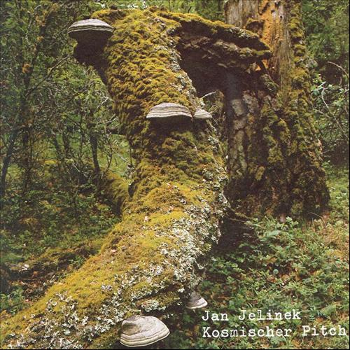
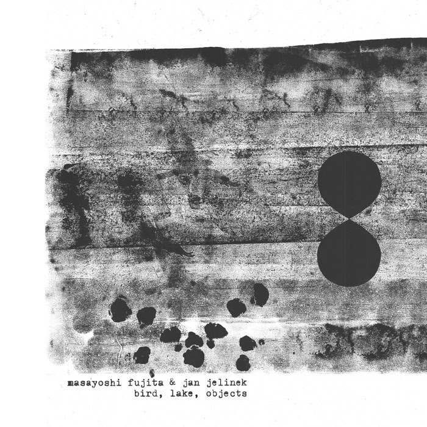
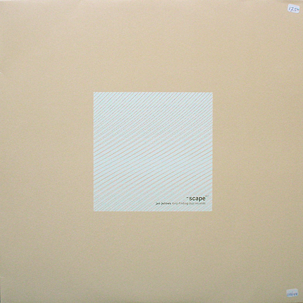
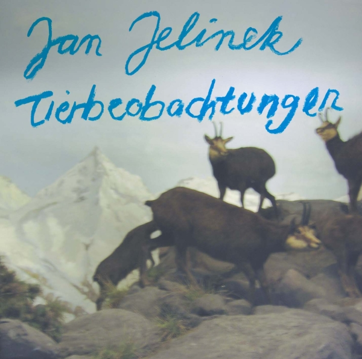
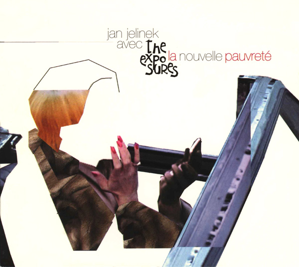
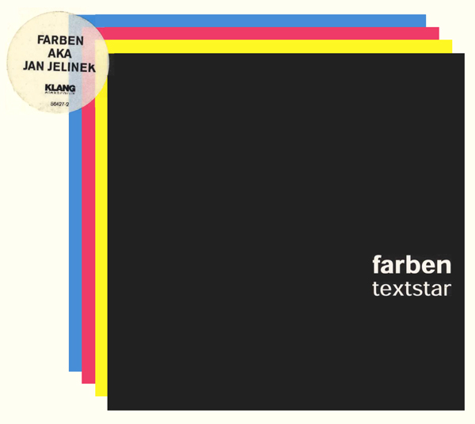

JAN JELINEK
HOME
INTERVIEWS
Kosmischer Pitch
2005

1. Universal Band Silhouette
7:06
2. Lemminge Und Lurchen Inc.
3:50
3. Im Diskodickicht
5:22
4. Vibraphonspulen
5:39
5. Lithiummelodie 1
4:06
6. Planeten In Halbtrauer
5:15
7. Western Mimikry
3:07
8. Morphing Leadgitarre Rückwärts
16:55
Birds, Lakes, Objects
2005

1. Undercurrent
7:06
2. Workshop For Modernity
5:06
3. I'll Change Your Life
8:05
4. Waltz (A Lonely Crowd)
7:03
5. Stripped To RM
5:59
6. IA_AI
4:08
Loop-Finding-Jazz-Records
2001

1. Moiré (Piano & Organ)
2. Rock In The Video Age
3. They, Them
4. Them, Their
5. Tendency
6. Moiré (Strings)
4:08
7. Do Dekor
8. rift
Tierbeobachtungen
2006

1. A Concert For Television
8:03
2. Palmen Aus Leder
7:12
3. Up To My Same Old Trick Again
7:43
4. Up To My Same Old Trick Again
6:39
5. Happening Tone
7:12
6. Tierbeobachtung
6:01
La Nouvelle Pauvreté
2003

1. Introducing
6:08
2. Facelift
5:36
3. There Are Other Worlds (They Have Not Told You Of)
4:13
4. My Favourite Shop
4:54
5. Trust The Words Of Stevie
3:57
6. If's, And's And But's
6:16
7. Davos S (Trio 'Round Midnight)
6:46
8. A Waste Land
2:34
Textstar
2002

1. Live At The Sahara Tahoe, 1973
7:12
2. Farben Says: Love To Love You Baby
6:12
3. Suntouch Edit
5:34
4. Beautone
7:17
5. Farben Says: So Much Love
6:15
6. Bayreuth
5:26
7. Ff
5:38
8. Silikon
6:46
9. Farben Says: Love Oh Love
6:54